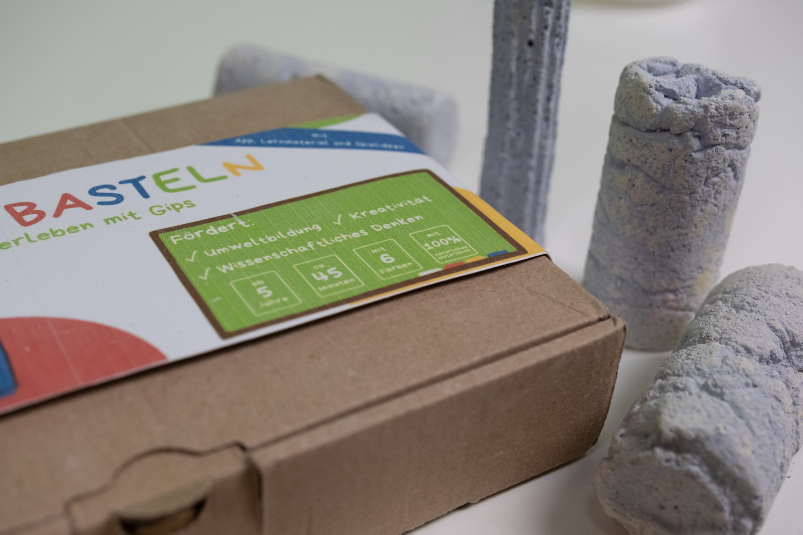
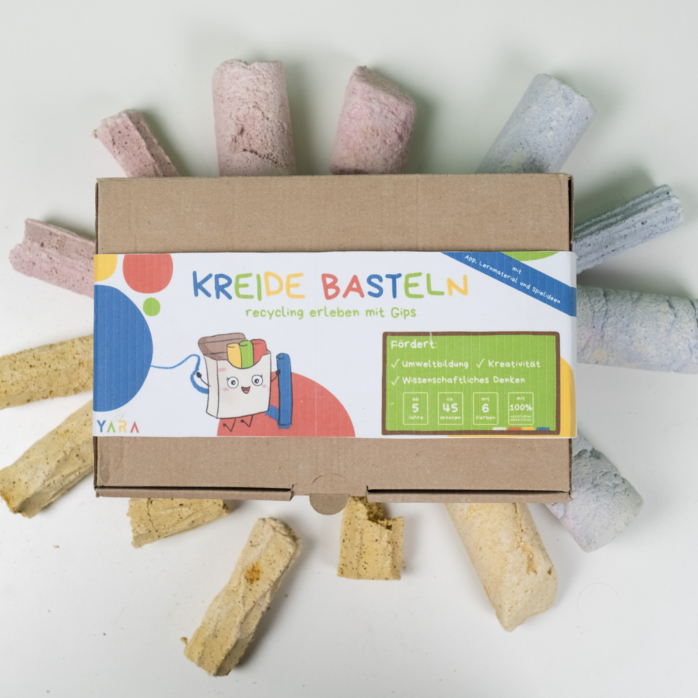

Produktinformationen
Entdecke das einzigartige DIY-Kreideset für Kinder – ein kreatives Abenteuer, das
Bastelspaß mit Umweltbewusstsein verbindet!
Mit recycelbaren Materialien, einem besonderen Gips aus der Zitronensäureproduktion
(einem industriellen Nebenprodukt) und spannenden Lerninhalten wird aus dem Set mehr
als nur Spielzeug: ein echtes Bildungsprojekt.
Das Kreideset

Es enthält verschiedene Materialien:
Weitere Infos:
⏱ Dauer: ca. 1 Stunde
👧 Empfohlenes Alter: ab 6 Jahren (jüngere Kinder nur mit Unterstützung)
Perfekt geeignet für:
Kindergeburtstage, Schulprojekte, Aktionstage oder als liebevolles Geschenk für kleine Weltverbesserer.
👉 Werde kreativ und bring Farbe in die Welt – mit deiner selbstgemachten Kreide!
Du hast die Materialien schon Zuhause und möchtest umweltfreundliche Kreide ganz einfach selbst herstellen? Dann starte direkt los! Klicke hier für die Schritt-für-Schritt-Anleitung.